Plotting Bayesian posteriors: halfeye, location-scale, and BF forest plots
Source:vignettes/bayesian-plots.Rmd
bayesian-plots.Rmd
library(emptyviz)
library(ggplot2)
library(dplyr)
library(tidyr)
library(forcats)
library(patchwork)
use_theme_mt()The model behind believe_projection_draws
This vignette’s data comes from the distributional brms
model Thalmann/Matticchio fit to believe_projection (see
vignette("geoms-and-theme") for the same data’s
raw-observation plots). Both the judgment mean and its spread
are modeled as a function of condition — the kind of model this
package’s Bayesian plot builders exist for:
# not run here - 8 chains x 10,000 iterations is well beyond what a vignette
# should fit live. The draws used below were extracted from this exact
# cached model by data-raw/believe-projection-posteriors.R; see
# ?believe_projection_draws et al. for how.
mod <- brm(
bf(
judgment ~ negation * scenario * trigger +
(1 + scenario * negation * trigger | id) +
(1 + scenario * negation | item),
sigma ~ negation * scenario + trigger
),
data = d, # the cleaned believe_projection from vignette("geoms-and-theme")
family = gaussian(),
prior = c(
prior(normal(0, .5), class = Intercept, lb = -2, ub = 2),
prior(normal(0, .5), class = Intercept, dpar = sigma),
prior(normal(0, 1), class = b, lb = -3, ub = 3),
prior(normal(0, .25), class = b, dpar = sigma),
prior(normal(0, .5), class = sd)
),
iter = 10000,
chains = 8
)
plot_ridge_hdi() /
plot_coef_grid_hdi()
Two layout wrappers around one shared layer builder,
layer_halfeye_hdi() (a ggdist::stat_slab() +
ggdist::stat_pointinterval() “halfeye” block: an HDI-shaded
density plus a multi-width ETI point-interval per category). Both expect
long-format posterior draws — one row per draw per category, as produced
by tidybayes::gather_emmeans_draws() or
spread_draws() — not raw observations, unlike the
_sd violin geoms in
vignette("geoms-and-theme").
-
plot_ridge_hdi(): every category stacked as a row in one shared-scale panel, for when the categories themselves are what’s being compared. -
plot_coef_grid_hdi(): each category gets its own free-scale panel in a grid, for coefficient posteriors that differ wildly in natural magnitude.
believe_projection_draws (see
?believe_projection_draws) holds exactly this shape
already: long-format marginal posterior draws for
scenario*negation*trigger, for
both the mu (judgment) and sigma (spread)
submodels, extracted via
emmeans() |> gather_emmeans_draws().
ridge_draws <- believe_projection_draws |>
filter(dpar == "mu") |>
mutate(cond = paste0(scenario, "-", negation))
plot_ridge_hdi()
plot_ridge_hdi(
ridge_draws,
category = cond,
facet = trigger,
facet_nrow = 2,
value_limits = c(-2.3, 2.3),
value_breaks = c(-2, -1, 0, 1, 2)
)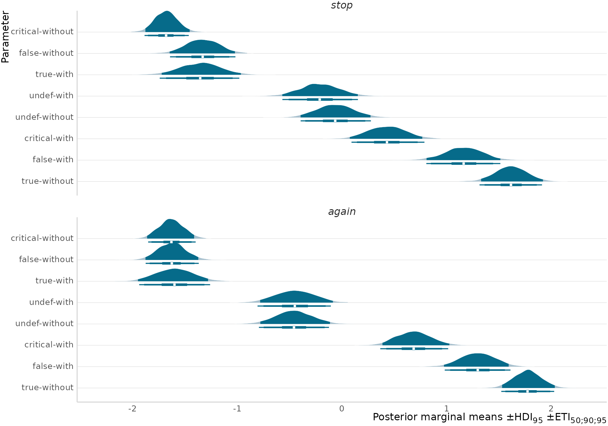
category_reorder
Default TRUE sorts rows by mean value (descending);
FALSE keeps category’s existing factor-level
order instead — useful when the order itself is meaningful
(e.g. matching a fixed condition sequence elsewhere in a paper).
p_reorder_on <- plot_ridge_hdi(
ridge_draws |> filter(trigger == "*again*"),
category = cond,
value_limits = c(-2.3, 2.3)
) +
labs(x = "Reordered (default)")
p_reorder_off <- plot_ridge_hdi(
ridge_draws |> filter(trigger == "*again*"),
category = cond,
category_reorder = FALSE,
value_limits = c(-2.3, 2.3)
) +
labs(x = "Original factor order")
p_reorder_on + p_reorder_off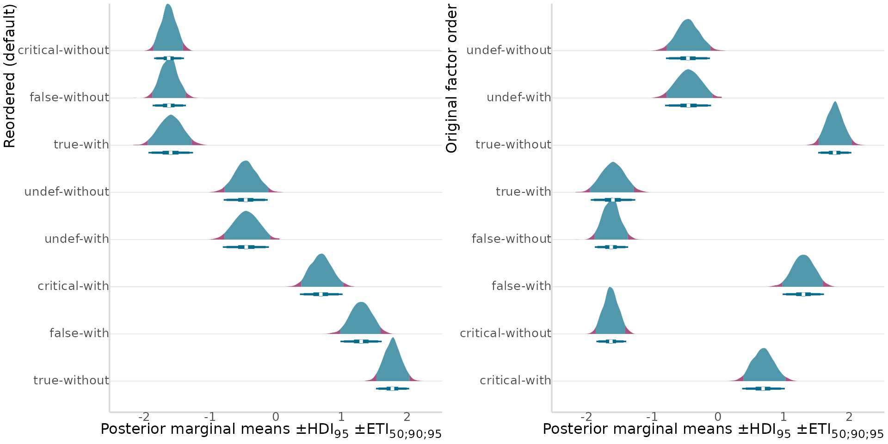
value_transform
The sigma submodel is fit on the log scale — pass
value_transform = exp to back-transform before plotting,
matching an aes(y = exp(.value))-style back-transformation
done by hand. believe_projection_draws’
dpar == "sigma" rows are exactly that submodel’s marginal
draws.
sigma_draws <- believe_projection_draws |>
filter(dpar == "sigma") |>
mutate(cond = paste0(scenario, "-", negation))
plot_ridge_hdi(
sigma_draws |> filter(trigger == "*again*"),
category = cond,
value_transform = exp,
ylab = "Posterior marginal SD ±HDI<sub>95</sub> ±ETI<sub>50;90;95</sub>"
)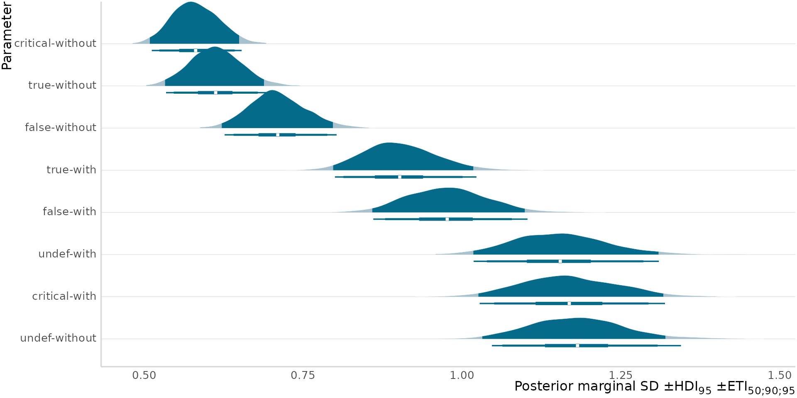
plot_coef_grid_hdi()
Free-scale small multiples for a set of model coefficients — the real
sum-coded fixed effects from both submodels
(believe_projection_coef_draws, see
?believe_projection_coef_draws) differ wildly enough in
natural magnitude that a shared axis would flatten the small ones,
exactly the case this layout is for.
mu_coef_draws <- believe_projection_coef_draws |> filter(dpar == "mu")
sigma_coef_draws <- believe_projection_coef_draws |> filter(dpar == "sigma")
plot_coef_grid_hdi(mu_coef_draws, category = coef, scale = 1.4)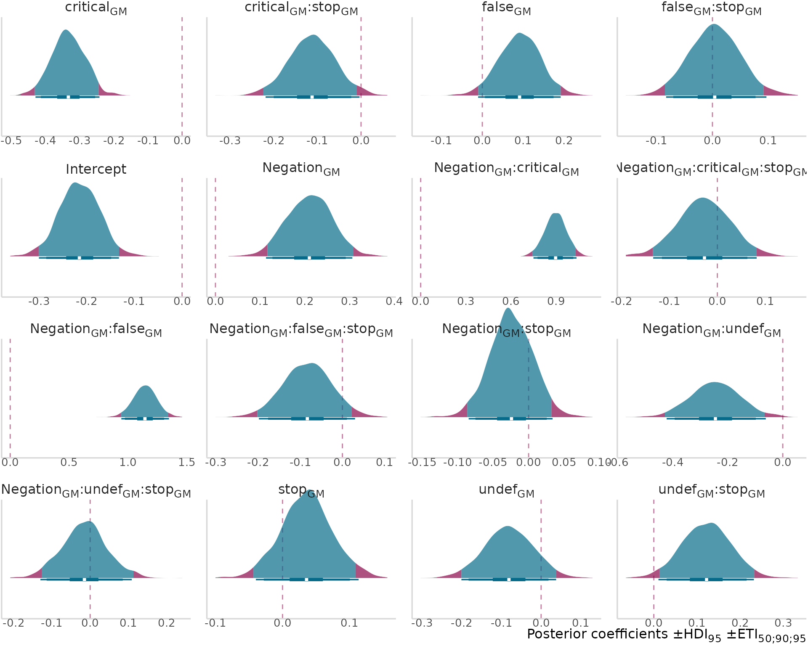
The sigma submodel’s coefficients (fewer terms - no
three-way interaction in
sigma ~ negation*scenario + trigger):
plot_coef_grid_hdi(sigma_coef_draws, category = coef, scale = 1.4, ncol = 3)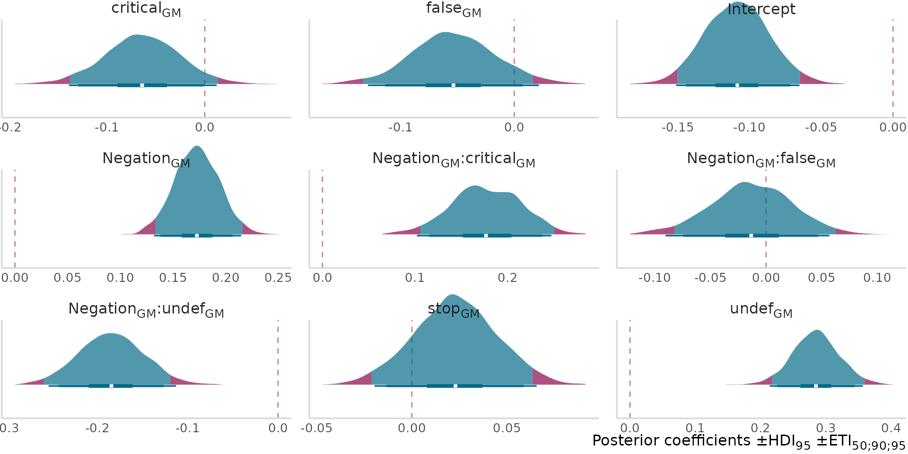
hline defaults to 0 (a common null-effect
reference line for coefficient grids); pass a different value or
NULL to move or omit it.
plot_coef_grid_hdi(mu_coef_draws, category = coef, scale = 1.4, hline = NULL)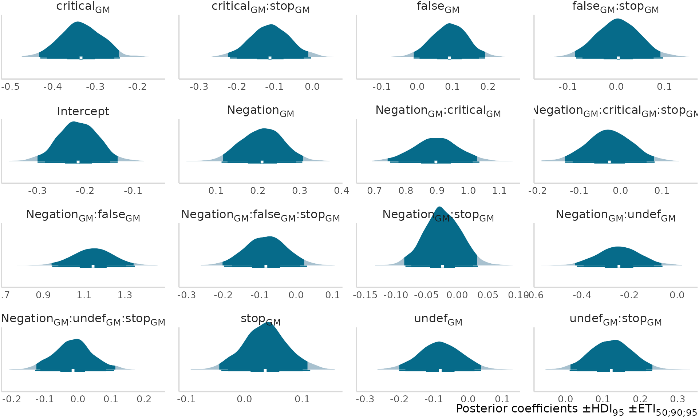
plot_location_scale()
A joint (posterior marginal mean) x (posterior marginal standard
deviation) plot: one point + a shaded bivariate credible ellipse per
condition, plus an optional sigma_max ceiling-effect reference curve —
y = sqrt((x - lower)(upper - x)), the maximum SD a bounded
response scale permits at a given mean. Lets a reader check whether a
condition’s spread is close to or far from that ceiling directly, rather
than computing it by hand for one condition at a time.
No custom Stat here either — the bivariate region is
ggplot2::stat_ellipse(), already in ggplot2 core.
Why the draws have to be paired
data must contain the location and scale draws already
paired - one row per (category[, shape],
.draw), where the location value and the scale value on
that row came from the same posterior iteration. That’s
different from independently summarizing the two submodels (e.g. taking
mean_hdi() of each separately) - a genuine join is what
lets the ellipse reflect their joint uncertainty (including any
correlation between a condition’s location and scale draws) rather than
two unrelated marginal intervals mashed into a fake cross.
In a real analysis, this means calling
tidybayes::gather_emmeans_draws() twice - once on the
location submodel, once with dpar = "sigma" - and joining
the results on .draw (plus whatever grouping columns
identify a condition):
library(brms)
library(emmeans)
library(tidybayes)
mod <- brm(
bf(rating ~ condition, sigma ~ condition),
family = gaussian(),
data = my_data
)
# one row per (condition, .draw)
loc_draws <- mod |>
emmeans(~condition) |>
gather_emmeans_draws()
# dpar = "sigma" pulls the scale submodel instead - fit (and so returned)
# on the log scale, hence sigma_transform = exp below
sig_draws <- mod |>
emmeans(~condition, dpar = "sigma") |>
gather_emmeans_draws()
# the join is what pairs each location draw with the scale draw from the
# *same* posterior iteration, rather than treating them as independent
paired_draws <- inner_join(
loc_draws, sig_draws,
by = c("condition", ".draw"),
suffix = c("_location", "_sigma")
)
plot_location_scale(
paired_draws,
category = condition,
location = .value_location,
sigma = .value_sigma,
sigma_transform = exp,
bounds = c(1, 7) # e.g. a 1-7 Likert-type response scale
)believe_projection_draws already has both submodels’
draws stacked long (a dpar column instead of two separate
objects) - pivoting dpar wide recovers exactly the
paired_draws shape above. This only works because
data-raw/believe-projection-posteriors.R thinned
mu/sigma down to the same shared set
of .draw indices rather than independently subsampling each
- the pairing plot_location_scale() depends on is a
property of which MCMC iteration a draw came from, so keeping mismatched
indices per submodel would silently produce a fake, unpaired cross.
loc_scale_draws <- believe_projection_draws |>
pivot_wider(names_from = dpar, values_from = .value)ellipse_level defaults to c(.5, .95) - a
narrow “core” credible ellipse nested inside a wider outer one, told
apart by alpha alone (darker/more opaque core, fainter outer band), the
same multi-width idea layer_halfeye_hdi() uses for its
point-intervals. Pass a single level
(e.g. ellipse_level = .95) to go back to one ellipse per
condition.
plot_location_scale(
loc_scale_draws,
category = scenario,
location = mu,
sigma = sigma,
shape = negation,
facet = trigger,
bounds = c(-2, 2)
)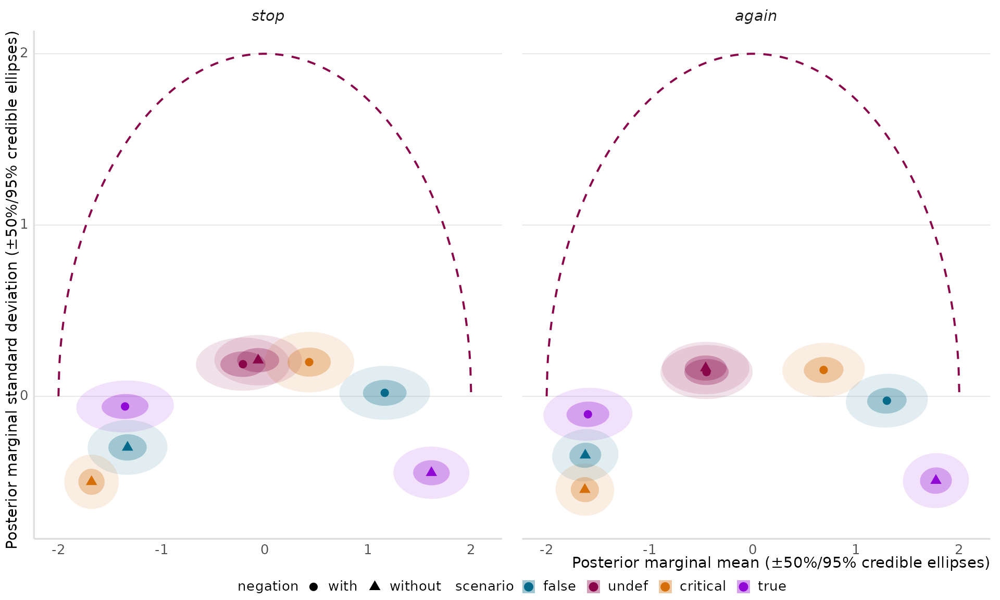
plot_bf_forest() / prepare_bf_contrasts()
/ layer_bf_evidence_scale()
A log Bayes Factor forest plot: one row per contrast, point ±
optional SE, colored by sign, with a shaded “weak evidence” region
(layer_bf_evidence_scale(), bundled in by default) at the
Jeffreys/Lee ±log(3) “weak/anecdotal evidence”
convention. layer_bf_evidence_scale() itself is composable
(like layer_halfeye_hdi()) - usable on its own on any plot
with a log-BF-valued axis, in either orientation.
pairs: selecting contrasts without hand-parsing
strings
bayestestR::bayesfactor_rope() computes every
pairwise contrast in a reference grid and names each one with an
auto-generated "<left> - <right>" string.
Picking out just the pairs you actually want to show, and giving them
clean labels, is exactly what’s error-prone about doing this by hand
(position-counting words out of the string, then a long hardcoded
filter(left == "x" & right == "y" | ...) chain).
plot_bf_forest()’s pairs argument takes that
off your plate: give it a plain list of c(left, right)
pairs, in your own words, and it filters + labels + reorders for you -
and errors, naming the exact pair, if one isn’t found, instead of the
filter silently matching nothing. You don’t need to know which order
bayesfactor_rope()’s reference grid happened to enumerate a
given pair in either - a pair matched in the opposite order gets
relabeled and sign-flipped to the order you asked for,
automatically.
believe_projection_bf (see
?believe_projection_bf) is real
bayestestR::bayesfactor_rope() output — one row per
pairwise contrast among the 8
scenario*negation cells (trigger
marginalized out, hence each raw contrast string’s trailing
" NA"), for both submodels. There’s no SE column at all,
which is the normal case for this kind of Bayes Factor (unlike a
repeated bridge-sampling estimate) and needs nothing special to work.
bf_pairs below picks out the 9 contrasts of interest among
the 8 cells’ pairwise combinations, as plain c(left, right)
pairs.
mu_bf <- believe_projection_bf |> filter(dpar == "mu")
bf_pairs <- list(
c("with undef", "without undef"),
c("with undef", "with critical"),
c("with true", "without true"),
c("with false", "without false"),
c("with critical", "without critical"),
c("with false", "with critical"),
c("without false", "without critical"),
c("without true", "with false"),
c("with true", "without false")
)
plot_bf_forest(mu_bf, contrast = contrast, log_bf = log_BF, pairs = bf_pairs)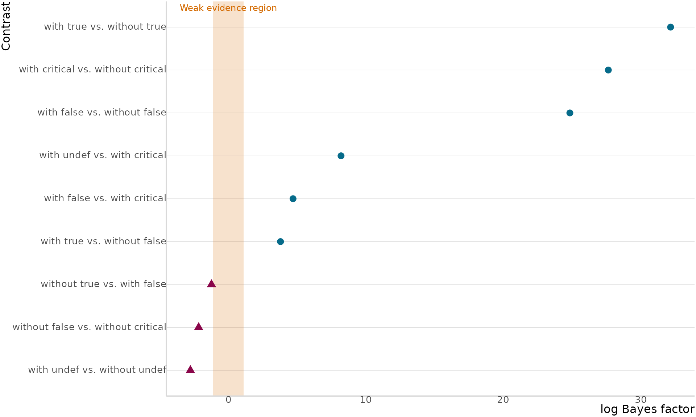
The trailing " NA" (emmeans’ placeholder for a
reference-grid variable marginalized out via
e.g. at = list(trigger = NA)) is stripped automatically;
see prepare_bf_contrasts() - the function
plot_bf_forest() calls internally - if you want to inspect
the split-and-labeled table directly, or reuse it outside a plot.
If your data already has one clean, pre-labeled row per contrast (no
bayestestR-style string to split), just omit
pairs and pass that column straight to
contrast.
direction_labels
Naming what a positive/negative log-BF supports turns the plot into a self-contained legend for the sign convention, instead of requiring the reader to already know which direction means what. The arrows and labels sit right at the top edge of the panel, out of the way of the data, adding essentially no extra space to the figure.
plot_bf_forest(
mu_bf,
contrast = contrast,
log_bf = log_BF,
pairs = bf_pairs,
direction_labels = c("supports difference", "supports equivalence")
)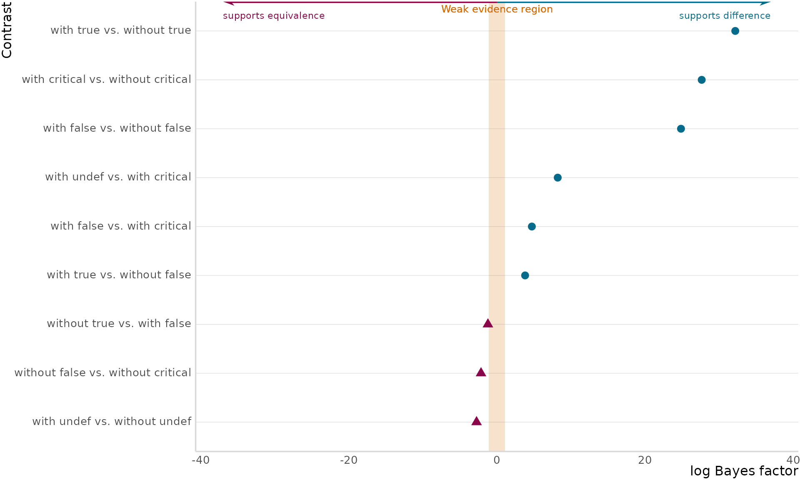
secondary_axis
A dual log/linear Bayes Factor axis - opt-in, since a log-only axis is perfectly fine on its own.
plot_bf_forest(
mu_bf,
contrast = contrast,
log_bf = log_BF,
pairs = bf_pairs,
direction_labels = c("supports difference", "supports equivalence"),
secondary_axis = TRUE
)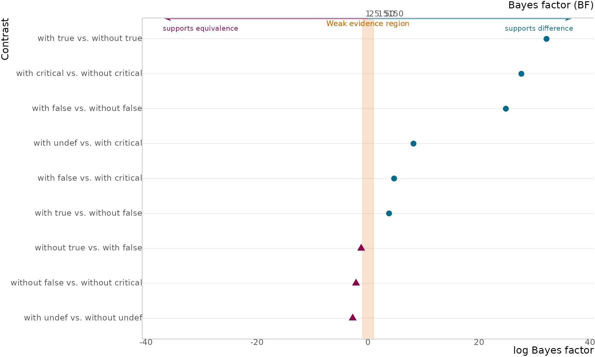
layer_bf_evidence_scale(orientation = "y")
The same annotation bundle on a continuous-x sweep (e.g. log-BF as a function of a prior’s width), with log-BF on the y-axis instead - the rect, arrows, and labels all rotate to hug the right edge of the panel instead of the top.
sweep_data <- data.frame(
prior_sd = seq(0.1, 1.5, by = 0.2),
log_bf = c(6.2, 5.1, 3.8, 2.5, 1.4, 0.3, -0.6, -1.5)
)
ggplot(sweep_data, aes(x = prior_sd, y = log_bf)) +
layer_bf_evidence_scale(
orientation = "y",
range = c(-3, 8),
direction_labels = c("supports difference", "supports equivalence")
) +
geom_line(color = mt_colors[1]) +
geom_point(color = mt_colors[1], size = 3) +
labs(x = "Prior standard deviation", y = "log Bayes factor") +
# unlike orientation = "x"'s top edge, the default right-side expansion
# isn't quite wide enough for orientation = "y"'s rotated label + arrow -
# this is the caller's own coord/margin choice, not something
# layer_bf_evidence_scale() should impose on every plot itself.
coord_cartesian(clip = "off") +
theme(plot.margin = margin(5.5, 55, 5.5, 5.5, "pt"))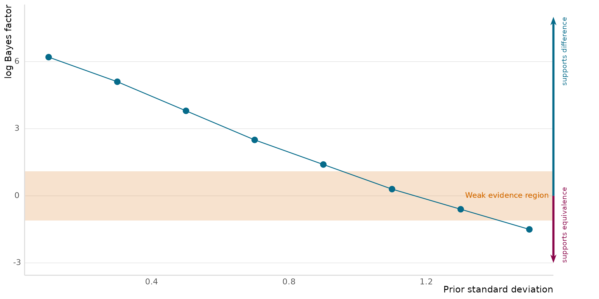